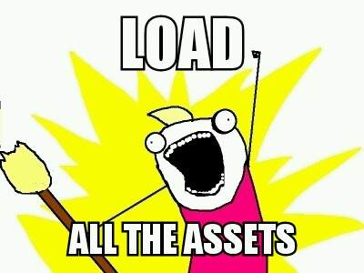
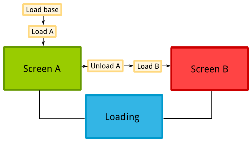

Managing groups of Assets
May 12, 2013 · 7 minute read · CommentsGames development
Games are resource intensive applications in terms of both memory and CPU time. Offtimes it’s necessary to render hundreds of different sprites on screen whilst playing and manipulating dozens of sound effects samples. Logically, those assets need to be stored in memory and such precious elixir doesn’t come for free.
Fair enough, you can probably afford to brainlessly waste some memory on PC when working on small projects but in the world of mobile devices is just the complete opposite. Not only phones and tablets have limited memory sizes, but theirs is also shared by many hungry apps and fancy background processes. If your app’s demands causes everything else to shut down, you"re going to make your users sad.
The sooner you face this, the better. Asset management can be a pain in the arse.
Throughout this article, I"d like to illustrate some of the challenges one has to face when dealing with many assets within a medium sized project. Later on, I"ll be presenting some classic approaches to finish with one that seems to be working for me quite well. The examples are focused on the libgdx framework, although the concepts are widely applicable.
The very basics
Just to make sure we"re on the same page, these two are the very fundamental items to take into account when managing resources in a game.
- Don’t load things twice. Eg. If you have identical looking sprites, share the texture data and render it as needed.
- Don’t load anything that you won’t need in the near future. Why would you load the final level when the user has just fired up the game for the very first time?
Basically, we"re going to try to use the smallest portion of memory we possibly can at a given point in execution.
Use the AssetManager Luke
Luckily enough, libgdx provides the splendid AssetManager, so, for $deity“s sake, please don’t reinvent the wheel. Are you not using libgdx? Fear not, fellow developer, for most modern libraries feature similar components. Eg. In Ogre3D we have ResourceGroupManager class.
Take all the time you need to read the correspondent wiki page in case you were oblivious to its existence. Long story short, here’s what AssetManager can do for you.
- Store one copy of each asset.
- Reference counting.
- Inter asset dependencies handling.
- Asynchronous asset loading, keeps your app responsive.
- Easily extensible, implement your custom loaders for arbitrary types of assets.### The naive approach
The most straightforward approach is to use AssetManager to load all your assets upfront and make the manager globally available. That way you"d be able to easily retrieve resources.

public class MyGame extends Game {
private AssetManager manager;
@Override
public void create() {
super.create()
manager = new AssetManager();
loadAssets();
}
@Override
public void dispose() {
manager.dispose();
}
public AssetManager getAssetManager() {
return manager;
}
private void loadAssets() {
manager.load("data/player.png", Texture.class);
manager.load("data/enemy.png", Texture.class);
manager.load("data/bullet.png", Texture.class);
manager.load("data/ui/uiskin.json", Skin.class);
// ...
manager.finishLoading();
}
}
While this is a very comfortable thing to do and renders itself valid in most cases, we"re still loading assets that won’t be needed right away. Actually this snippet is taken almost as it was in my Ludum Dare #26 entry, and it was perfectly fine. It’s highly likely for you to get away with this. However, if you want to go the extra mile to achieve maximum performance, you know exactly what can be improved.
Slightly more advanced approaches
We only want to load the resources that will be used at a given time while avoiding being interned in a mental institution. Micromanaging everything is hard work and definitely not worth the headache in almost every situation. One question now arises.
What’s the ideal asset management granularity?
Obviously, the soft spot will be closely tied to the scope and genre in play but let’s list a few possibilities.
- Everything at a time – Not an option
- Menus, levels
- Individual menu screen, individual level, all characters
- Individual menu screen, individual level, needed characters
- Individual menu screen, streaming level chunks, needed characters
- …
Different games take different paths. On one hand you have Max Payne 3 which loads common assets upfront and then it seamlessly streams the rest as needed. On the other hand we find the Call of Duty example, where there’s a load screen masked behind a briefing before each level.
I"m a lazy bastard and that sounds like a lot of work
As you can see, it can get mental institution level of crazy in terms of deciding who loads what and when. Retrieving an asset you erroneously thought to be in memory could become an everyday issue. You want to simplify it.
The most annoying thing is to manually load each asset in the appropriate place and to handle the asynchronous process. Then why not gather resources and group them? Loading or freeing up an asset group by a single name would be much easier. I"ll leave the grouping policy entirely up to you to decide as it depends on your needs. However, it seems like the simple way to go is that each game Screen is responsible for loading and unloading its own resource group. If you think it’s going to take some time, then it might be appropriate to render a loading screen meanwhile. Moreover, you could have a base group of common assets that will always remain available.

Taking a data driven approach to group assets is like the cherry on top as it enables you to make adjustments to balance out the workload as you iterate on the process. I started using XML as file format but JSON or similar would also be fit. Here’s an example.
<assets >
<group name="base">
<asset type="com.siondream.core.animation.AnimationData" path="data/caveman.xml" />
<asset type="com.siondream.core.physics.PhysicsData" path="data/caveman_physics.xml" />
<asset type="com.badlogic.gdx.scenes.scene2d.ui.Skin" path="data/ui/uiskin.json" />
</group>
</assets>
Qualified types and reflection are used to make the AssetManager#load calls.
Grouped Asset Manager code
Here’s the full implementation for my Asset class. It’s kind of a small layer on top of the libgdx AssetManager. Feel free to use it, bin it or change it. However, be advised that I don’t plan to offer further continued for it, this is simply to illustrate my approach.
public class Assets implements Disposable, AssetErrorListener {
private static final String TAG = "Assets";
private Logger logger;
private AssetManager manager;
private ObjectMap<String, Array<Asset>> groups;
public Assets(String assetFile) {
logger = new Logger(TAG, Logger.INFO);
manager = new AssetManager();
manager.setErrorListener(this);
manager.setLoader(PhysicsData.class, new PhysicsLoader(new InternalFileHandleResolver()));
manager.setLoader(AnimationData.class, new AnimationLoader(new InternalFileHandleResolver()));
loadGroups(assetFile);
}
public void loadGroup(String groupName) {
logger.info("loading group " + groupName);
Array<Asset> assets = groups.get(groupName, null);
if (assets != null) {
for (Asset asset : assets) {
manager.load(asset.path, asset.type);
}
}
else {
logger.error("error loading group " + groupName + ", not found");
}
}
public void unloadGroup(String groupName) {
logger.info("unloading group " + groupName);
Array<Asset> assets = groups.get(groupName, null);
if (assets != null) {
for (Asset asset : assets) {
if (manager.isLoaded(asset.path, asset.type)) {
manager.unload(asset.path);
}
}
}
else {
logger.error("error unloading group " + groupName + ", not found");
}
}
public synchronized <T> T get(String fileName) {
return manager.get(fileName);
}
public synchronized <T> T get(String fileName, Class<T> type) {
return manager.get(fileName, type);
}
public boolean update() {
return manager.update();
}
public void finishLoading() {
manager.finishLoading();
}
public float getProgress() {
return manager.getProgress();
}
@Override
public void dispose() {
logger.info("shutting down");
manager.dispose();
}
@Override
public void error(String fileName, Class type, Throwable throwable) {
logger.error("error loading " + fileName);
}
private void loadGroups(String assetFile) {
groups = new ObjectMap<String, Array<Asset>>();
logger.info("loading file " + assetFile);
try {
XmlReader reader = new XmlReader();
Element root = reader.parse(Gdx.files.internal(assetFile));
for (Element groupElement : root.getChildrenByName("group")) {
String groupName = groupElement.getAttribute("name", "base");
if (groups.containsKey(groupName)) {
logger.error("group " + groupName + " already exists, skipping");
continue;
}
logger.info("registering group " + groupName);
Array<Asset> assets = new Array<Asset>();
for (Element assetElement : groupElement.getChildrenByName("asset")) {
assets.add(new Asset(assetElement.getAttribute("type", ""),
assetElement.getAttribute("path", "")));
}
groups.put(groupName, assets);
}
}
catch (Exception e) {
logger.error("error loading file " + assetFile + " " + e.getMessage());
}
}
private class Asset {
public Class<?> type;
public String path;
public Asset(String type, String path) {
try {
this.type = Class.forName(type);
this.path = path;
} catch (ClassNotFoundException e) {
logger.error("asset type " + type + " not found");
}
}
}
}
Conclusions and further improvements
This small grouped asset manager will do the trick for me. Nevertheless I believe it could be improved in a few ways.
- JSON format for faster parsing.
- Automatically scan asset folders.
- Associate file extensions to asset types. * …
Anyhow, I hope I made my point of showing some different approaches to asset management along their pros and cons. I"d love to hear your thoughts on the topic, and were you to find yourself disagreeing with me, by all means, share your point of view.